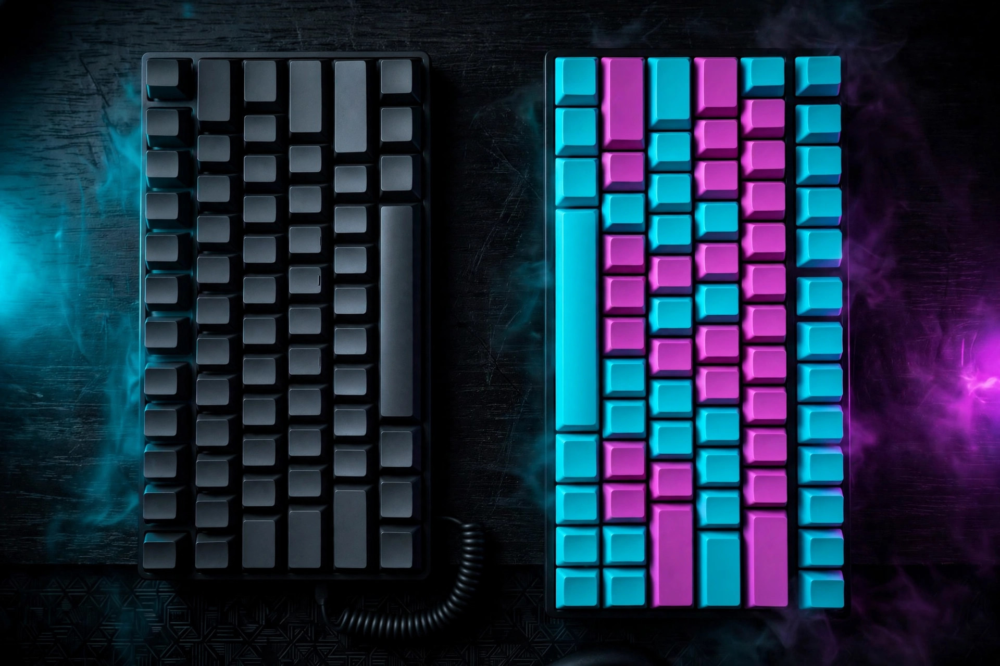

QWERTY vs Dvorak vs Colemak: should you switch keyboard layouts?

Somewhere in every typist's life, usually during a slow afternoon, the thought arrives: the keyboard itself is arranged badly, and a better arrangement exists. It is true that alternatives exist, and true that they measurably change how your fingers move. It is also true that switching costs weeks to months of slower typing, and that no layout has been shown to make its users categorically faster. This guide treats the switch the way it deserves: as an experiment with a price tag. Compare what each layout actually changes, calculate the cost in your own hours, decide whether you are the kind of typist it suits — and if you try it, run the trial so you can quit cleanly.
What a layout actually changes (and what it does not)
A keyboard layout is a software setting: it decides which letter each physical key produces. Change the setting and the keycaps still say QWERTY — touch typists rely on muscle memory, not labels, which is why this site's lessons work for any layout once the memory is built. What the arrangement changes is how far fingers travel and how often they leave the home row. What it does not change is you: your accuracy habits, your rhythm, and your practice history move with you to the new layout, which is why the honest summaries of the evidence say trained typists on different layouts reach similar speeds. The famous early claims that Dvorak was dramatically faster came from studies whose methods have since been challenged, and modern comparisons are careful to say the speed evidence is mixed, while the movement and comfort differences are real. Keep that split in mind through everything below: movement is measurable; a speed windfall is not promised by anyone credible.
The three layouts side by side
QWERTY was designed in the 1870s by Christopher Latham Sholes for mechanical typewriters. Dvorak was patented in 1936 by August Dvorak, placing the most-used letters on the home row with vowels on one hand and common consonants on the other, so hands alternate. Colemak, released in 2006 by Shai Coleman, rearranges fewer keys and deliberately keeps common QWERTY shortcut positions — Ctrl+C, Ctrl+V, Ctrl+Z and the Z, X, C, V row — where your hands already expect them.
The clearest like-for-like numbers come from a simulator that typed the same 5,847-character English passage on each layout and modelled the finger movement. Modelled, not measured on real hands — treat the figures as a comparison of the arrangements, not a promise about your hands:
| Layout | Modelled finger travel | vs QWERTY | Letters on home row | Same-finger pairs |
|---|---|---|---|---|
| QWERTY | 152.86 m | — | 36% | 7.9% |
| Dvorak | 88.28 m | 42% less | 71% | — |
| Colemak | 88.81 m | 42% less | 73% | 1.5% |
| Workman | 84.37 m | 45% less | 67% | — |
Source: The Typing Cat's layout comparison lab, modelled on its default sample passage; Dvorak also switched hands on 67% of keystrokes in the same model, the highest of the layouts compared. Workman is included because it appears in that comparison, as a reminder that the classic three are not the whole menu — but every additional layout is another retraining, not a shortcut around one.
Read the table for what it is: on ordinary English prose, alternative layouts roughly halve modelled finger travel and double home-row usage. That is a genuine physical difference, and for people who type all day it is a plausible comfort difference. It is not a WPM difference — the same sources are explicit that less movement does not by itself guarantee faster typing.
The real price: a retraining cost calculation
Sources put the switching cost anywhere from weeks of slower typing to several months at reduced productivity before a proficient typist returns to baseline. Vague ranges do not help a decision, so convert the dip into your own hours before you start. Worked example, with round numbers you can replace:
- Your typing volume: say you type about 2 hours a day on workdays — roughly 44 hours a month.
- The dip: take a cautious planning assumption that the new layout runs at about half your old effective speed for the first month and about three-quarters for the second, reaching baseline around the end of month two — inside the published range of estimates. That is roughly 22 lost hour-equivalents in month one and 11 in month two: about 33 hours of typing output spent on the switch.
- The repayment condition: after baseline, the switch only "pays" in time if the new layout makes your everyday typing faster or lets you type longer in comfort. At a hypothetical 5% everyday gain on 44 hours a month — about 2.2 hours a month — repaying 33 hours takes around 15 months. At no speed gain, it never repays in time at all; the return would have to be comfort, which is a legitimate reason, but name it as the reason.
Run the same arithmetic with your real volume. Someone typing six hours a day pays roughly triple the hours in the dip — and also gains triple from any real improvement. Someone typing twenty minutes a day pays little and, symmetrically, gets little. Volume is the whole calculation.
Who switching suits — and who it does not
Reasonable candidates: typists who type for hours daily and find QWERTY physically tiring by evening; learners starting almost from scratch, who have little muscle memory to lose; and enthusiasts who will enjoy the project itself, since enjoyment is what carries a two-month retraining. On comfort specifically, be careful and honest: alternative layouts are often discussed in connection with hand fatigue and strain symptoms, and this article is general information, not medical advice — persistent pain, numbness, or tingling deserves a qualified health professional, not a layout experiment.
Poor candidates: anyone whose main hope is a large speed jump (the evidence does not support expecting one), anyone facing a deadline, exam, or new job in the next two months, and anyone who regularly types on other people's or shared machines, where your layout will not be installed and your QWERTY will have rusted. Programmers should also test honestly: layouts are optimised for English prose, while code is dense with brackets, symbols, and numbers, so a layout that feels wonderful for paragraphs may feel ordinary for code.
The reversible two-layout trial
If you still want to try, run it as an experiment you can abandon without losing your QWERTY:
- Record your QWERTY baseline first: three five-minute tests on one site, middle score and accuracy noted — the same controlled method as any honest before/after comparison.
- Change only the software setting. Add the new layout in your operating system's keyboard settings and leave the keycaps alone; looking down at wrong labels teaches nothing. Keep QWERTY installed and one shortcut away at all times.
- Protect the new layout's practice, time-box the pain: use the new layout for all practice sessions and low-stakes typing, but switch back to QWERTY for anything deadline-driven during the first weeks. Total immersion is faster and also how people quit in week one.
- Keep QWERTY warm: ten minutes of QWERTY typing once or twice a week. Bilingual typists are a real thing; the skill you protect is the one you can fall back on.
- Set the decision date and criteria now: at the end of week six, keep the new layout only if (a) your new-layout test score is at or above your QWERTY baseline, or clearly closing on it week over week, and (b) you can name a benefit you actually feel — comfort, enjoyment, flow — beyond the theory. Otherwise revert, with the trial counted as useful information, not failure.
What success looks like: by the decision date you type the passage test on the new layout at baseline speed and accuracy, your QWERTY is still usable after the weekly warm-up, and you are choosing to continue — not continuing merely because quitting would waste the weeks already spent. Sunk cost is not a typing strategy.
FAQ
Is Dvorak or Colemak proven faster than QWERTY? No. The honest summary across sources is that no layout is definitively faster; trained typists reach similar speeds on each, while the reductions in finger travel are real and modelled at roughly 42–45% on the same passage.
Dvorak or Colemak, if switching? Colemak changes fewer keys and keeps the common shortcut positions, so it is generally described as the easier transition for an existing QWERTY typist. Dvorak reorganises more, including punctuation and shortcuts, in pursuit of hand alternation.
Do I need a new keyboard? No. The layout is an operating system setting; the physical keyboard and its printed keycaps stay exactly as they are, which is also what makes the trial above fully reversible.
Will I lose QWERTY permanently? Not if you maintain it — the trial keeps a short weekly QWERTY session precisely so the old layout stays available for shared machines and surprises.